自由基如何傷害細胞？氫分子作用機制完整解析
人體每天承受無數次自由基攻擊，慢性積累是自律神經老化的底層驅動因素之一。從自由基的產生、氧化壓力積累，到氫分子選擇性抗氧化機制，完整梳理你需要知道的科學脈絡。
氫氧科學、HRV 健康、生活應用——持續更新，讓你隨時補充最新的保健知識。
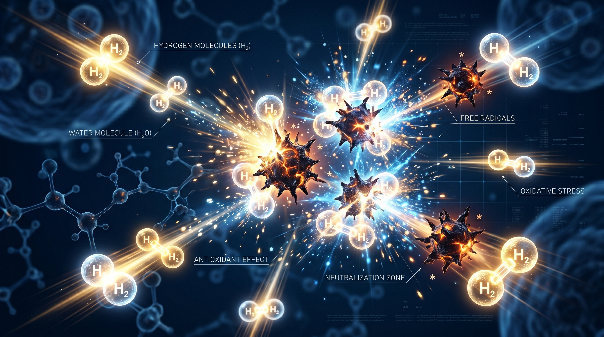
人體每天承受無數次自由基攻擊，慢性積累是自律神經老化的底層驅動因素之一。從自由基的產生、氧化壓力積累，到氫分子選擇性抗氧化機制，完整梳理你需要知道的科學脈絡。
「感覺有精神」和「精力真的充足」是兩件不同的事。解析高效能主管最常犯的三個能量管理迷思，以及為什麼 HRV 能讓你第一次客觀地看見自己的狀態。
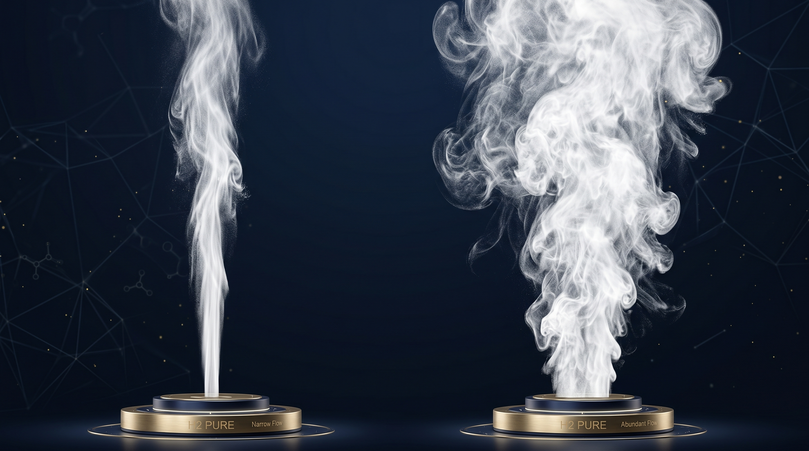
鈦氫兩款氫氧機的差異不只是流量大小。從使用人數、吸入濃度、日常場景、長期需求四個維度完整比較，幫你找到最適合自己的規格。
真正的休息不是「沒在工作」，而是主動讓神經系統切換模式。解析「刻意休息」的定義、科學原理，以及高效能主管如何將休息轉化為可持續的競爭優勢。
睡眠時數相同，HRV 卻可以相差 2 倍。一位 47 歲創業者的真實案例，記錄睡眠品質調整後，RMSSD 從 18ms 回升至 34ms 的完整 10 週歷程。

「感覺沒問題」是自律神經損耗最危險的階段。解析 5 個 HRV 偏低者常見卻容易忽略的靜默訊號，幫你在自覺症狀出現前讀懂身體真正的狀態。
每週飛兩次的企業主，身體承受的氧化壓力遠比你想的多。整理出差旅途中最關鍵的精力保護策略，從睡眠節律、抗氧化補充到自律神經恢復，幫你出差不掉電。
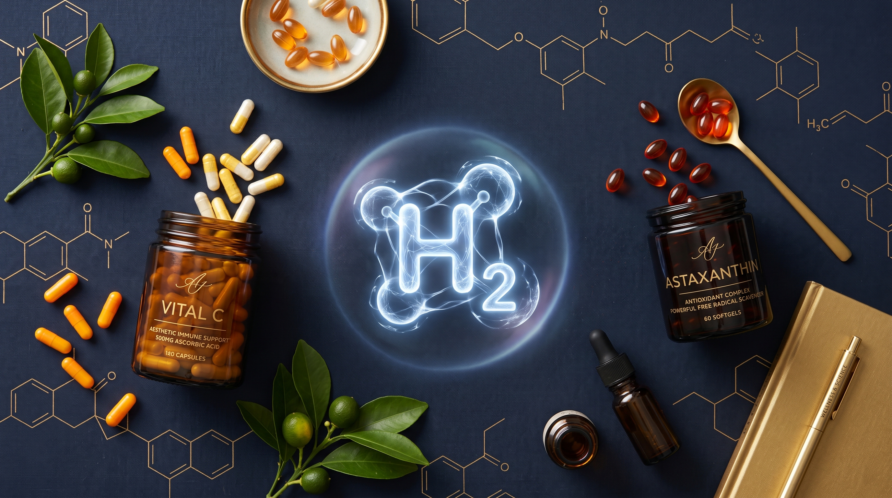
同樣標榜抗氧化，氫氣分子和維生素C、蝦青素的機制截然不同。選擇性清除有害自由基、不干擾正常生理信號，才是真正的差異所在。
一位 52 歲 CEO 從 RMSSD 19 開始，三個月的 HRV 追蹤記錄了什麼？以匿名真實數據，呈現自律神經恢復力的變化軌跡，以及數字背後的生活改變。
40 歲後，你的自律神經正在悄悄流失彈性——但這不只是「老化」的問題。解析三個可能從未注意到的後天加速因素，以及可以採取的應對方式。
早晨、睡前、工作空檔——哪個時段吸氫效果最好？答案取決於你的目標。整理四個時段的生理邏輯，幫你找到最適合自己生活節奏的吸氫時機。
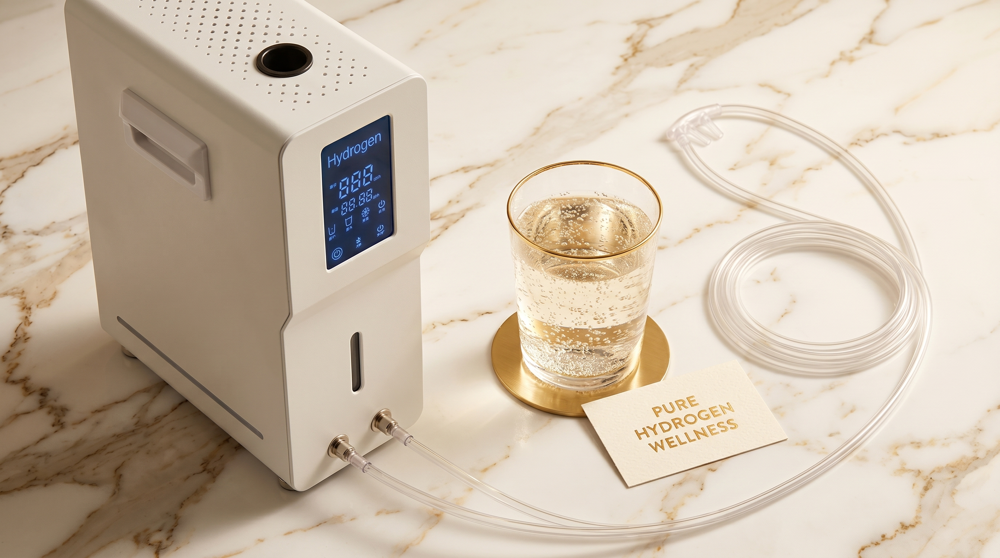
氫水方便、吸入濃度高——兩種補充方式各有優勢。從攝取量、吸收速度、適合場景到成本，完整比較幫你找到最適合自己的選擇。
HRV 前後測如何量化你的身體恢復力？一個數字的變化，揭示自律神經從壓力模式到恢復模式的真實歷程，以及這對日常決策意味著什麼。

長期高壓不只讓你疲憊——它正在侵蝕你自律神經的恢復彈性。了解慢性壓力如何累積損耗，以及 HRV 如何讓這個看不見的過程變得可測量。
慢性發炎不會痛，卻是 40 歲後各種健康問題的底層驅動因素。了解它如何悄悄積累，以及為什麼選擇性抗氧化是應對它的關鍵邏輯。

你的「電池」為什麼充不飽？答案藏在細胞的粒線體裡。了解粒線體如何影響你的精力上限，以及如何透過保護粒線體來真正提升日常能量。

明明睡了七、八個小時，隔天仍然提不起勁？這可能不是睡眠時數的問題，而是 HRV 偏低的信號。了解自律神經如何影響你的恢復力。

吸入氫氣（H₂）的效果有科學依據嗎？本文整理目前主要研究方向，包括選擇性抗氧化、代謝改善、運動恢復與神經保護，幫你看懂氫氣吸入的真實潛力。
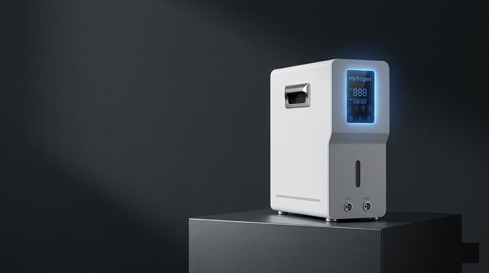
氫氧機是透過電解水技術，將水分子分解為氫氣與氧氣的裝置。本文從電解原理、與氫水機的差異，到適合族群，完整解析氫氧機的科學基礎。
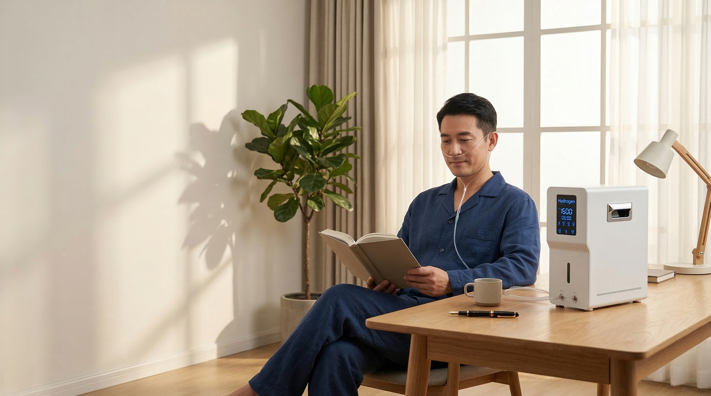
氫氣（H₂）為什麼能改善健康？從選擇性抗氧化機制、科學研究方向、吸入 vs 飲用比較，到多久才有感覺——用科學角度帶你讀懂氫氣保健的原理。
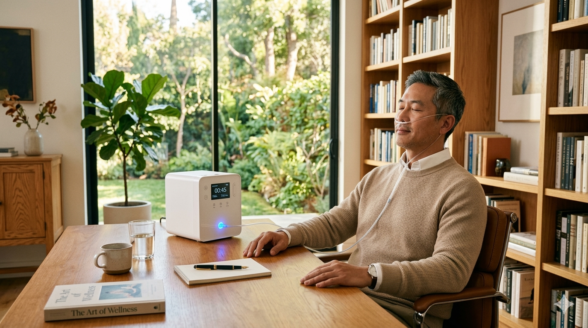
氫氣（H₂）為什麼能快速穿透細胞？PEM 固態電解技術如何保障高純度？本文帶你從原理開始了解氫氧保健的科學基礎...
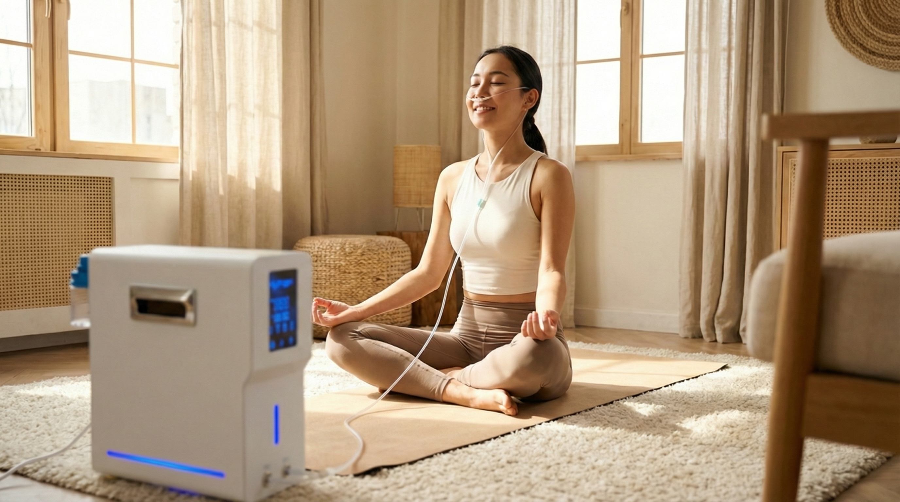
心律變異（HRV）是心跳與心跳之間時間差的變化量，是目前科學界認可衡量自律神經平衡的客觀指標之一...
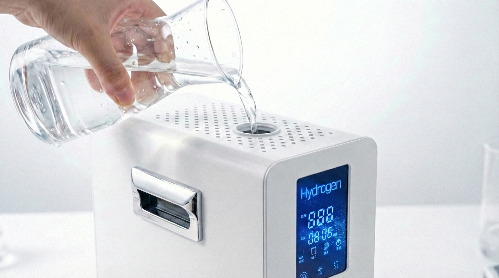
同樣是補充氫分子，吸入與飲用的吸收路徑、速度、濃度都不同。這篇文章幫你梳理兩者的特性，找到最適合你生活方式的選擇...

對於時間寶貴的企業主與主管而言，如何在不改變既有生活節奏的前提下，將氫氧吸入融入晨間或睡前例行...
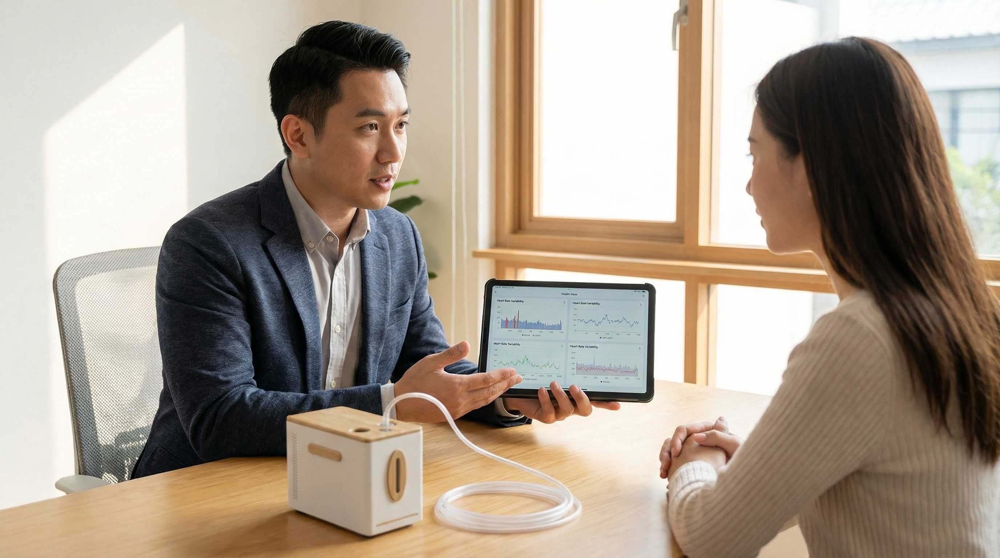
你有過這樣的經驗嗎？明明覺得「還好」，但 HRV 報告卻顯示自律神經嚴重失衡？學會解讀數字背後的訊息...
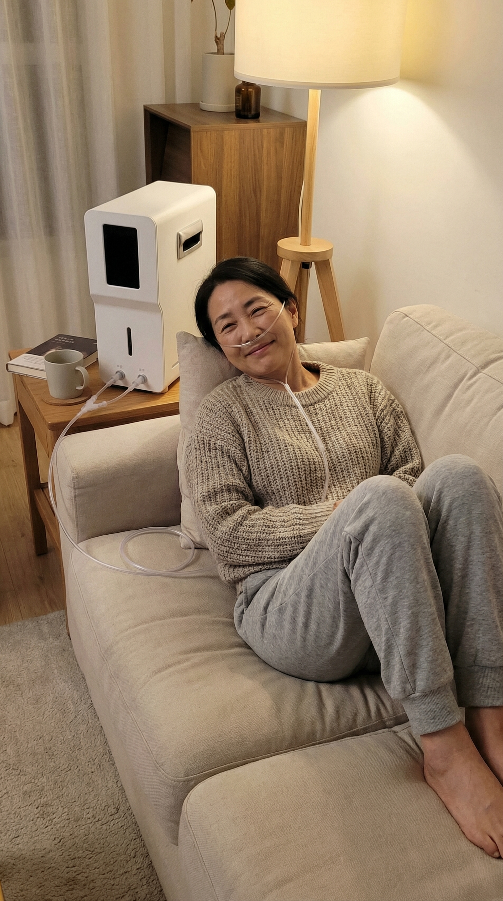
一位 48 歲企業主的真實紀錄。從剛開始的懷疑，到看見數據趨勢的轉變，以及他如何把氫氧變成日常習慣...